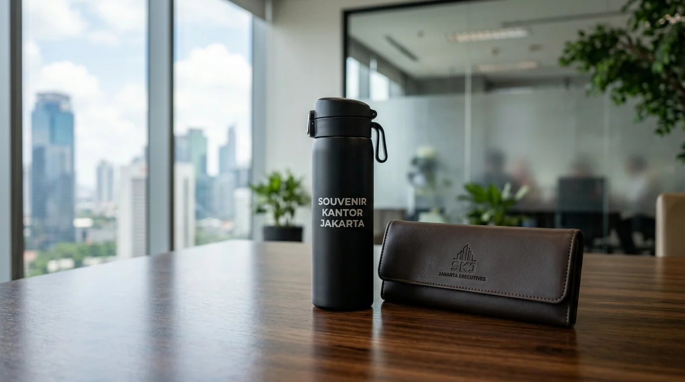
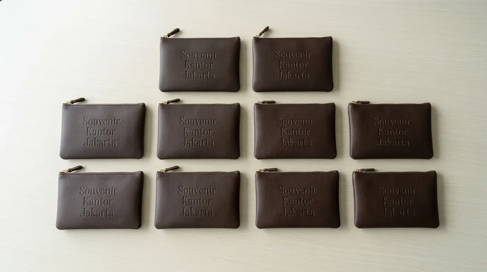

Pilihan Souvenir Kantor 50 Ribuan Fungsional dan Elegan
 Tim Redaksi Souvenir Kantor Jakarta
14 Agustus 2026
7 Menit Baca
Tim Redaksi Souvenir Kantor Jakarta
14 Agustus 2026
7 Menit Baca

Produk bernilai 50 ribuan menonjolkan durabilitas bahan tahan lama seperti stainless steel, kulit sintetis tebal, dan kain kanvas premium. Kepraktisan harian barang memastikan logo perusahaan dilihat secara berulang oleh pengguna dan lingkungan sekitarnya. Teknik kustomisasi presisi seperti laser engraving memberikan tampilan merek yang lebih eksklusif dan tahan goresan. Layanan pengadaan terpercaya menyediakan kepastian stok dan jaminan standar kualitas untuk pesanan jumlah banyak.
Pilihan souvenir kantor 50 ribuan menyajikan beragam opsi produk bermutu tinggi yang memadukan kegunaan praktis sehari-hari dengan estetika modern untuk menunjang citra profesional instansi.
- Apa Saja Jenis Produk yang Menjadi Pilihan Souvenir Kantor 50 Ribuan Terpopuler?
- Mengapa Kualitas Material Souvenir 50 Ribuan Sangat Menentukan Citra Perusahaan?
- Bagaimana Proses Pemesanan Souvenir Kantor 50 Ribuan untuk Pesanan Jumlah Banyak?
- Pertanyaan Umum Seputar Pilihan Souvenir Kantor 50 Ribuan (FAQ)
- Kesimpulan Praktis
Apa Saja Jenis Produk yang Menjadi Pilihan Souvenir Kantor 50 Ribuan Terpopuler?
Jenis produk yang menjadi pilihan souvenir kantor 50 ribuan terpopuler meliputi tumbler stainless steel vakum, pouch organizer kulit PU, payung lipat angin, serta paket notebook hardcover.
Berdasarkan Data Survei Kepuasan Penerima Merchandise Korporat 2025/2026, lebih dari 86% responden menyatakan lebih terkesan dan menyimpan barang pemberian perusahaan yang memiliki fungsi kerja atau gaya hidup nyata. Anggaran 50 ribuan per unit memberi ruang bagi perusahaan untuk menghadirkan barang-barang fungsional dengan kelas material yang lebih tinggi.
- 1 Tumbler Stainless Steel Vakum Termo
- 2 Pouch Organizer Kulit PU Multi-Kompartemen
- 3 Payung Lipat Otomatis Rangka Anti-Angin
- 4 Notebook Hardcover Eksklusif
- 5 Desk Organizer Set Akrilik/Kayu
Tumbler Stainless Steel Vakum Termo – Tempat minum berteknologi insulasi vakum ganda (double-wall vacuum insulation) ini mampu menahan suhu dingin maupun panas selama berjam-jam. Dengan kustomisasi cetak logo grafir laser yang rapi, tumbler ini menjadi barang wajib di meja kerja setiap profesional muda.
Pouch Organizer Kulit PU Multi-Kompartemen – Pouch dengan bahan kulit sintetis tebal yang dilengkapi banyak sekat interior sangat berguna untuk mengorganisir pengisi daya (charger), tetikus (mouse), dan dokumen penting. Tampilannya yang ringkas dan elegan menjadikannya barang yang bangga dibawa saat rapat luar kantor.
Payung Lipat Otomatis Rangka Anti-Angin – Payung dengan mekanisme buka-tutup otomatis satu tombol ini menawarkan kenyamanan ekstra saat cuaca hujan maupun panas terik. Area daun payung yang luas memberikan visibilitas tinggi bagi cetakan logo perusahaan Anda saat digunakan di tempat umum.

Mengapa Kualitas Material Souvenir 50 Ribuan Sangat Menentukan Citra Perusahaan?
Kualitas material souvenir 50 ribuan sangat menentukan citra perusahaan karena barang promosi yang kokoh secara langsung mencerminkan standar profesionalisme dan keandalan instansi penyedianya.
Durabilitas Tinggi
Bahan tahan lama & anti rusakVisibilitas Merek
Logo terlihat setiap hariPersepsi Positif
Meningkatkan citra brand hingga 3,5xKetika perusahaan memberikan souvenir bermaterial tebal dan tidak mudah rusak, penerima secara tidak sadar mengasosiasikan merek tersebut dengan kualitas, keandalan, dan kepedulian. Riset Riset Pemasaran Korporat Indonesia 2026 menunjukkan bahwa penggunaan material premium pada merchandise promosi meningkatkan persepsi positif terhadap brand hingga 3,5 kali lipat.
Bagi perusahaan Anda yang ingin menghadirkan produk promosi berdaya tahan tinggi dengan pengerjaan cetak logo yang presisi, seluruh koleksi fungsional ini dapat dipesan secara mudah melalui Souvenir Kantor Jakarta.
Bagaimana Proses Pemesanan Souvenir Kantor 50 Ribuan untuk Pesanan Jumlah Banyak?
Proses pemesanan souvenir kantor 50 ribuan dilakukan melalui tahap konsultasi produk, pembuatan sampel desain kustom, persetujuan sampel fisik, hingga produksi massal dan pengiriman.
Konsultasi
Pilih produk & kustomisasiMockup Digital
Visualisasi desain logoSampel Fisik
Cek kualitas & presisiProduksi & Kirim
QC ketat & pengirimanAlur pengerjaan yang sistematis sangat penting untuk memastikan hasil akhir sesuai dengan ekspektasi divisi pengadaan:
- Pemilihan Produk dan Penentuan Kustomisasi: Menentukan jenis barang, warna, serta metode cetak logo (sablon, print UV, atau laser engraving).
- Persetujuan Desain Digital (Digital Mockup): Tim desainer membuatkan visualisasi tata letak logo pada produk sebelum melangkah ke tahap cetak.
- Produksi Sampel Fisik: Pembuatan 1 unit sampel nyata untuk memeriksa kualitas bahan, presisi warna, dan kerapian kemasan.
- Produksi Massal dan QC Ketat: Pencetakan seluruh jumlah pesanan dengan pemeriksaan kualitas secara berkala sebelum dipacking dan dikirim.
Setiap tahapan produksi ditangani oleh tenaga ahli terampil agar pesanan selesai tepat waktu. Percayakan kebutuhan merchandise kantor Anda kepada Souvenir Kantor Jakarta untuk pengalaman transaksi yang aman dan terpercaya.
Pertanyaan Umum Seputar Pilihan Souvenir Kantor 50 Ribuan (FAQ)
Butuh Pilihan Souvenir Kantor 50 Ribuan Fungsional?
Konsultasikan kebutuhan souvenir kantor fungsional 50 ribuan untuk acara perusahaan Anda dengan tim kami untuk mendapatkan rekomendasi produk dan penawaran terbaik.
Konsultasi SekarangKesimpulan Praktis
Menentukan pilihan souvenir kantor 50 ribuan yang tepat bergantung pada nilai kegunaan harian dan ketahanan material produk. Dengan menghadirkan barang seperti tumbler stainless vakum, pouch kulit, atau payung otomatis, perusahaan Anda tidak hanya memberikan hadiah, tetapi juga membangun hubungan jangka panjang yang positif dengan penerima. Segera wujudkan merchandise kantor impian perusahaan Anda dengan melakukan pemesanan di Souvenir Kantor Jakarta sekarang juga.